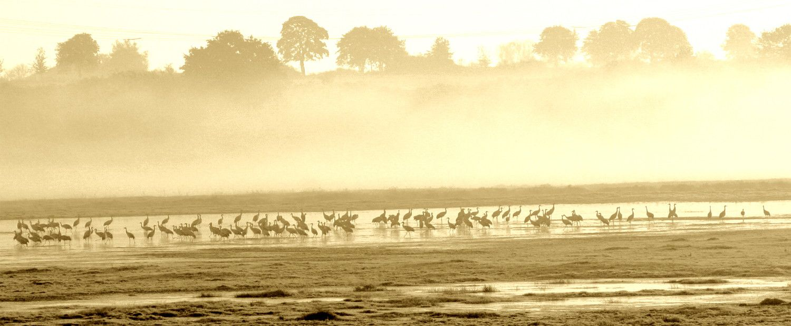

Glück
Grus grus aus der Familie der Kraniche
Die sich jagenden Höhepunkte sind überstanden. Es ist windiger, es wird Herbst. Ein prächtiger Herbst bis heute, er überschüttet uns mit Früchten. Der verregnete Sommer wandelt sich zur schönen Erinnerung mit Bootsausflug auf der einmalig weiten Wasserfläche des Tollensetals. An den Herbstmorgen mit Sonnenaufgang über den Nebeln des Flusses ist das hundertfache Trompeten der allgemein anerkannten Glücksvögel zu hören. Große Schwärme erheben sich aus dem Frühdunst. Sie finden schwebend ihre Ordnung und ihr Rufen erzeugt bei manchem federlosen Zweibeiner ein sehnsüchtiges Glücksgefühl. Nils Holgerson liegt auf der Lauer in den Genen unserer Großeltern. Der Großvater am Telefon erklärt auf Nachfrage gern Wissenswertes zu diesen Paradiesvögeln. Einst fast ausgestorben in Deutschland, sind es wieder Tausende und Abertausende. Sie übernachten stehend in den feuchter werdenden Flusstälern, deren Melioration immer unbezahlbarer wird. Vor der Abreise stärken sie sich mit den reichlich vorhandenen Abfällen der Energie produzierenden Landwirtschaft. Nie vorher gab es solche Mengen an Mais in unserer Eiszeitlandschaft.Irgendwann also könnten sie übrig bleiben, uns überleben, nur Kraniche und Maschinen, die selbstständig und satellitengesteuert für das gemeinsame Futter sorgen. Deswegen erheben sich einzelne besorgte Stimmen aus den Reihen der Maschinenführer. „Bitte, wir möchten sie abschießen dürfen, so wie die Kormorane“, ruft der Bauernpräsident und sanft erhebt sich zustimmendes Gemurmel aus den Reihen der subventionsgeplagten Landschaftspfleger. „Auch uns steht das Wasser bis zum Hals, deshalb Melioration soweit das Auge reicht, Wüste bis zum Horizont!“ ruft schließlich die ganze Versammlung. In den aufkommenden Sandsturm müssen noch mehr Windräder und wenn der Regen dann ganz ausbleibt, gibt es einen noch höheren Ertrag pro Hektar aufgestellter Sonnenkollektoren. Energiewirte heißen diese ehemaligen Bauern seit einiger Zeit. Begriffswandlungen haben immer Bedeutung... und Auswirkungen. Es gibt wieder viel mehr Kraniche im Tollensetal.
MS
